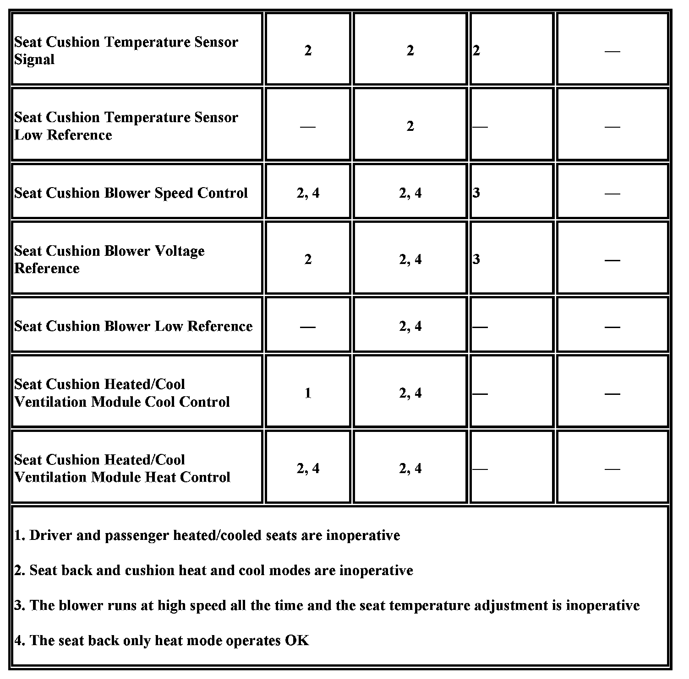

Heated/Cooled Seats Inoperative
Heated/Cooled Seat Inoperative (KB6)
Diagnostic Instructions
- Perform the Diagnostic System Check - Vehicle prior to using this diagnostic procedure Initial Inspection and Diagnostic Overview.
- Review Strategy Based Diagnosis for an overview of the diagnostic approach Initial Inspection and Diagnostic Overview.
- Diagnostic Procedure Instructions provides an overview of each diagnostic category Initial Inspection and Diagnostic Overview.
Diagnostic Fault Information

Circuit/System Description
The heat and cool seat functions for both the driver and passenger seats is controlled by the climate control seat module that is located under the passenger seat cushion. The heated and cooled seat switches are located in the HVAC control module. When a heated or cooled seat switch is pressed a serial data message from the HVAC control module is sent to the memory seat module (MSM) indicating the heat/cool seat request. The MSM then sends a pulse width modulation (PWM) signal through the appropriate heated/cooled seat mode signal circuit to the climate control seat module (CCSM) to activate the heated or cooled seat function. The CCSM then applies battery voltage to the seat cushion and seat back thermal electronic devices (TEDs) and a pre-determined voltage to the blower motors. To determine seat temperature, the CCSM supplies a 5 volt signal and a low reference to the temperature sensors that are attached to each TED. The temperature sensors are variable resistors, their resistance changes as the temperature of the seat changes. Then based on the seat temperature, the CCSM controls the voltage level that it applies to the TEDs and blower motors.
Diagnostic Aids
The following conditions must be met in order to perform valid tests when diagnosing the climate control seat system:
- The ignition must be cycled OFF then ON between each test in order to reset the CCSM.
- The engine must be running in order to supply the CCSM with the amount of current needed to operate the heated/cool seat system.
Reference Information
Schematic Reference
Heated/Cooled Seat Schematics Electrical Diagrams
Connector End View Reference
Heated/Cooled Seat Connector End Views Connector Views
Electrical Information Reference
- Circuit Testing Component Tests and General Diagnostics
- Connector Repairs Component Tests and General Diagnostics
- Testing for Intermittent Conditions and Poor Connections Component Tests and General Diagnostics
- Wiring Repairs Component Tests and General Diagnostics
Scan Tool Reference
- Scan Tool Data List Scan Tool Testing and Procedures
- Scan Tool Data Definitions Scan Tool Testing and Procedures
Scan Tool Reference
Scan Tool Data List Scan Tool Testing and Procedures
Circuit/System Verification
1. Ignition ON, observe the HVAC control panel while pressing and releasing the appropriate heated or cooled seat switch. The appropriate switch symbol should be displayed on the control panel.
-> If the symbol is not displayed, replace the HVAC control module.
2. Operate the driver and passenger heated and cooled seats through the modes of operation listed below. The seat should operate in all three modes.
- Seat back and cushion heat mode
- Back only heat mode
- Cool mode
-> If both, the driver and passenger heated/cool seats are inoperative, refer to Driver and Passenger Heated/Cool Seats Inoperative.
-> If the driver heated/cool seat is inoperative, refer to Driver Heated/Cool Seat Circuit System Testing.
-> If the passenger heated/cool seat is inoperative, refer to Passenger Heated/Cool Seat Circuit System Testing.
Circuit/System Testing
Driver and Passenger Heated/Cool Seats Inoperative
1. Ignition OFF, disconnect the C1 harness connector at the CCSM.
2. Verify that a test lamp illuminates between the ground circuit terminal M and B+.
-> If the test lamp does not illuminate, test the ground circuit for an open/high resistance.
3. Verify that a test lamp illuminates between the B+ circuit terminal E and ground.
-> If the test lamp does not illuminate, test the B+ circuit for a short to ground or an open/high resistance.
4. Ignition OFF, disconnect the C2 harness connector at the CCSM.
5. Ignition ON, verify that a test lamp illuminates between the ignition circuit terminal 1 and ground.
-> If the test lamp does not illuminate, test the ignition circuit for a short to ground or an open/high resistance.
6. If all circuits test normal, replace the CCSM.
Driver Heated/Cool Seat Circuit System Testing
1. Ignition OFF, disconnect the C3 harness connector at the CCSM.
2. Connect a test lamp between the signal circuit terminal 14 and B+.
3. Ignition ON, press the HEAT or COOL seat switch through the high, medium, and low positions to OFF. The test lamp should illuminate until the OFF position is reached.
-> If the test lamp does not illuminate, test the signal circuit for a short to voltage or an open/high resistance. If the circuit tests normal, replace the MSM.
-> If the test lamp is ON with the switch in the OFF position, test the signal circuit for a short to ground. If the circuit tests normal, replace the MSM.
4. Connect the C3 harness connector to the CCSM.
5. Disconnect the harness connector at the seat cushion ventilation heat and cool module.
6. Ignition OFF, test for less than 5 ohms between the low reference circuit terminal 4 and ground.
-> If greater than the specified range, test the low reference circuit for an open/high resistance. If the circuit tests normal, replace the CCSM.
7. Ignition ON, test for 4.8 - 5.2 V between the signal circuit terminal 5 and ground.
-> If less than the specified range, test the signal circuit for a short to ground or an open/high resistance. If the circuit tests normal, replace the CCSM.
-> If greater than the specified range, test the signal circuit for a short to voltage. If the circuit tests normal, replace the CCSM.
Important: The ignition must be cycled OFF then ON between each test in order to reset the CCSM.
8. Ignition ON, connect a test lamp between the control circuit terminals listed below and ground. The test lamp should illuminate or slowly illuminate for approximately 2-4 seconds after the switch is pressed. On the heat control circuit, the test lamp may exhibit a 4 second delay before it starts to illuminate.
Press the HEAT switch for heat control and the COOL switch for cool control.
- Seat cushion heat control circuit terminal 1
- Seat cushion cool control circuit Terminal 3
-> If the test lamp does not illuminate, test the control circuit for a short to ground or an open/high resistance. If the circuit tests normal, replace the CCSM.
-> If the test lamp is always ON, test the appropriate control circuit for a short to voltage. If the circuit tests normal, replace the CCSM.
Important: The ignition must be cycled OFF then ON between each test in order to reset the CCSM.
9. Connect a test lamp between the circuit terminals listed below and ground. The test lamp should illuminate or slowly illuminate for approximately 5 seconds after pressing the HEAT switch.
- Seat cushion blower voltage reference circuit terminal 2
- Seat cushion blower speed control circuit terminal 7
-> If the test lamp does not illuminate, test the appropriate circuit for a short to ground or an open/high resistance. If the circuit tests normal, replace the CCSM.
-> If the test lamp is always ON, test the appropriate circuit for a short to voltage. If the circuit tests normal, replace the CCSM.
10. Ignition OFF, connect the harness connector to the seat cushion ventilation heat and cool module.
11. Disconnect the harness connector at the seat back ventilation heat and cool module.
12. Test for less than 5 ohms between the low reference circuit terminal 4 and ground.
-> If greater than the specified range, test the low reference circuit for an open/high resistance. If the circuit tests normal, replace the CCSM.
13. Ignition ON, test for 4.8 - 5.2 V between the signal circuit terminal 5 and ground.
-> If less than the specified range, test the signal circuit for a short to ground or an open/high resistance. If the circuit tests normal, replace the CCSM.
-> If greater than the specified range, test the signal circuit for a short to voltage. If the circuit tests normal, replace the CCSM.
Important: The ignition must be cycled OFF then ON between each test in order to reset the CCSM.
14. Connect a test lamp between the control circuit terminals listed below and ground. The test lamp should illuminate or slowly illuminate for approximately 4 seconds after the switch is pressed. On the heat control circuit, the test lamp may exhibit a 4 second delay before it starts to illuminate.
Press the HEAT switch for heat control and the COOL switch for cool control.
- Seat back heat control circuit terminal 1
- Seat back cool control circuit terminal 3
-> If the test lamp does not illuminate, test the appropriate control circuit for a short to ground or an open/high resistance, If the circuit tests normal, replace the CCSM.
-> If the test lamp is always ON, test the appropriate control circuit for a short to voltage. If the circuit tests normal, replace the CCSM.
Important: The ignition must be cycled OFF then ON between each test in order to reset the CCSM.
15. Connect a test lamp between the circuits listed below and ground. The test lamp should illuminate or slowly illuminate for approximately 5 seconds after pressing the HEAT switch.
- Seat back blower voltage reference circuit terminal 2
- Seat back blower speed control circuit terminal 7
-> If the test lamp does not illuminate, test the appropriate circuit for short to ground or an open/high resistance. If the circuit tests normal, replace the CCSM.
-> If the test lamp is always ON, test the appropriate circuit for a short to voltage. If the circuit tests normal, replace the CCSM.
16. If all circuits test normal, test or replace the appropriate seat cushion or seat back ventilation heat and cool module.
Passenger Heated/Cool Seat Circuit System Testing
1. Ignition OFF, disconnect the C3 harness connector at the CCSM.
2. Connect a test lamp between the signal circuit terminal 6 and B+.
3. Press the HEAT or COOL seat switch through the high, medium, and low positions to OFF. The test lamp should illuminate until the OFF position is reached.
-> If the test lamp does not illuminate, test the signal circuit for a short to voltage or an open/high resistance. If the circuit tests normal, replace the MSM.
-> If the test lamp is ON with the switch in the OFF position, test the signal circuit for a short to ground. If the circuit tests normal, replace the MSM.
4. Connect the C3 harness connector to the CCSM.
5. Disconnect the harness connector at the seat cushion ventilation heat and cool module.
6. Ignition OFF, test for less than 5 ohms between the low reference circuit terminal 4 and ground.
-> If greater than the specified range, test the low reference circuit for an open/high resistance. If the circuit tests normal, replace the CCSM.
7. Ignition ON, test for 4.8 - 5.2 V between the signal circuit terminal 5 and ground.
-> If less than the specified range, test the signal circuit for a short to ground or an open/high resistance. If the circuit tests normal, replace the CCSM.
-> If greater than the specified range, test the signal circuit for a short to voltage. If the circuit tests normal, replace the CCSM.
Important: The ignition must be cycled OFF then ON between each test in order to reset the CCSM.
8. Ignition ON, connect a test lamp between the control circuit terminals listed below and ground. The test lamp should illuminate or slowly illuminate for approximately 2-4 seconds after the switch is pressed. On the heat control circuit, the test lamp may exhibit a 4 second delay before it starts to illuminate.
Press the HEAT switch for heat control and the COOL switch for cool control.
- Seat cushion heat control circuit terminal 1
- Seat cushion cool control circuit terminal 3
-> If the test lamp does not illuminate, test the appropriate control circuit for a short to ground or an open/high resistance. If the circuit tests normal, replace the CCSM.
-> If the test lamp is always ON, test the appropriate control circuit for a short to voltage. If the circuit tests normal, replace the CCSM.
Important: The ignition must be cycled OFF then ON between each test in order to reset the CCSM.
9. Connect a test lamp between the circuit terminals listed below and ground. The test lamp should illuminate or slowly illuminate for approximately 5 seconds after pressing the HEAT switch.
- Seat cushion blower voltage reference circuit terminal 2
- Seat cushion blower speed control circuit terminal 7
-> If the test lamp does not illuminate, test the appropriate circuit for a short to ground or an open/high resistance. If the circuit tests normal, replace the CCSM.
-> If the test lamp is always ON, test the appropriate circuit for a short to voltage. If the circuit tests normal, replace the CCSM.
10. Ignition OFF, connect the harness connector to the seat cushion ventilation heat and cool module.
11. Disconnect the harness connector at the seat back ventilation heat and cool module.
12. Test for less than 5 ohms between the low reference circuit terminal 4 and ground.
-> If greater than the specified range, test the low reference circuit for an open/high resistance. If the circuit tests normal, replace the CCSM.
13. Ignition ON, test for 4.8 - 5.2 V between the signal circuit terminal 5 and ground.
-> If less than the specified range, test the signal circuit for a short to ground or an open/high resistance. If the circuit tests normal, replace the CCSM.
-> If greater than the specified range, test the signal circuit for a short to voltage. If the circuit tests normal, replace the CCSM.
Important: The ignition must be cycled OFF then ON between each test in order to reset the CCSM.
14. Connect a test lamp between the control circuit terminals listed below and ground. The test lamp should illuminate or slowly illuminate for approximately 4 seconds after the switch is pressed. On the heat control circuit, the test lamp may exhibit a 4 second delay before it starts to illuminate.
Press the HEAT switch for heat control and the COOL switch for cool control.
- Seat back heat control circuit terminal 1
- Seat back cool control circuit terminal 3
-> If the test lamp does not illuminate, test the appropriate control circuit for a short to ground or an open/high resistance. If the circuit tests normal, replace the CCSM.
-> If the test lamp is always ON, test the appropriate control circuit for a short to voltage. If the circuit tests normal, replace the CCSM.
Important: The ignition must be cycled OFF then ON between each test in order to reset the CCSM.
15. Connect a test lamp between the circuits listed below and ground. The test lamp should illuminate or slowly illuminate for approximately 5 seconds after pressing the HEAT switch.
- Seat back blower voltage reference circuit terminal 2
- Seat back blower speed control circuit terminal 7
-> If the test lamp does not illuminate, test the appropriate circuit for a short to ground or an open/high resistance. If the circuit tests normal, replace the CCSM.
-> If the test lamp is always ON, test the appropriate circuit for a short to voltage. If the circuit tests normal, replace the CCSM.
16. If all circuits test normal, test or replace the appropriate seat cushion or seat back ventilation heat and cool module.
Component Testing
Ventilation Heat and Cool Module
1. Ignition OFF, disconnect the harness connectors at the seat cushion and seat back ventilation heat and cool modules.
Important: If the resistance is measured with the seat still warm or cool, the resistance values will vary. At 68�F (20�C), the nominal resistance value is 1200 ohms �5 percent. For warmer or cooler ambient temperatures, refer to the Temperature vs Resistance table below. The delta resistance values between the seat cushion and seat back temperature sensors should not be greater than 2000 ohms.
2. Test for 300 ohms - 18 kohms between the temperature sensor signal circuit terminal 5 and the low reference circuit terminal 8.
-> If not within the specified range, replace the ventilation heat and cool module.
Important: The test leads must be connected in the correct polarity, otherwise lower out of range values will appear. Use the Positive Lead for the COOL control circuit and the Negative Lead for the HEAT control circuit. If the resistance is measured with the seat still warm or cool, the resistance values will vary even if the system was powered up for just a few seconds. The TED must be allowed to stabilize to room temperature prior to a measurement. The conditions listed below will change the resistance to out of range values:
- The test leads are incorrectly connected.
- Air blowing across the TED
- Measuring the resistance at other than room temperature of 70�F
- Holding the TED portion of the heated and cool ventilation module in your hand
In warmer or cooler climates where room temperature conditions of 70�F (21�C) may be unattainable, resistance values may read above the specified range. Use a heat gun or a blower to warm or cool the TED while measuring the resistance. The resistance values should slowly lower toward the specified range.
3. Test for 0.9 - 10 ohms between the heat control circuit terminal 1 and the cool control circuit terminal 3.
-> If not within the specified range, replace the ventilation heat and cool module.
Important: The test leads must be connected in the correct polarity, otherwise higher out of range values will appear. Use the Positive Lead for the control circuit and the Negative Lead for the ground circuit.
4. Test for 6 k - 9 kohms between blower motor control circuit terminal 2 and the low reference circuit terminal 4.
-> If not within the specified range, replace the ventilation heat and cool module.
Important: The test leads need to be connected in the correct polarity, otherwise higher out of range values will appear. Use the Positive Lead for the speed control circuit and the Negative Lead for the ground circuit.
5. Test for 290 k - 420 kohms between blower motor speed control circuit terminal 7 and the low reference circuit terminal 4.
-> If not within the specified range, replace the ventilation heat and cool module.
Temperature vs Resistance
Repair Instructions
Perform the Diagnostic Repair Verification after completing the diagnostic procedure.
- Driver or Passenger Seat Back Ventilation Heating and Cooling Blower Replacement Service and Repair
- Driver or Passenger Seat Cushion Ventilation Heating and Cooling Blower Replacement Service and Repair
- Control Module References for the MSM and CCSM replacement, setup, and programming Control Module References